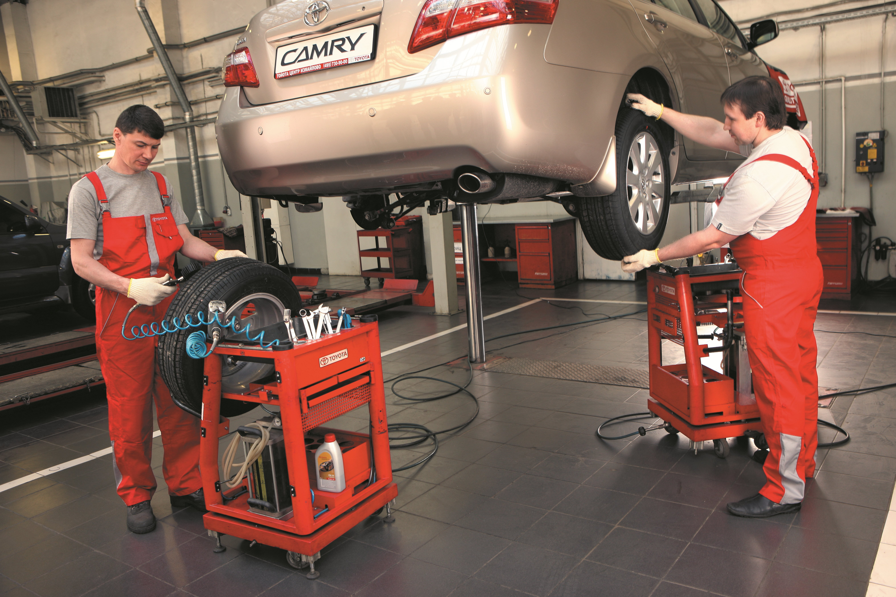
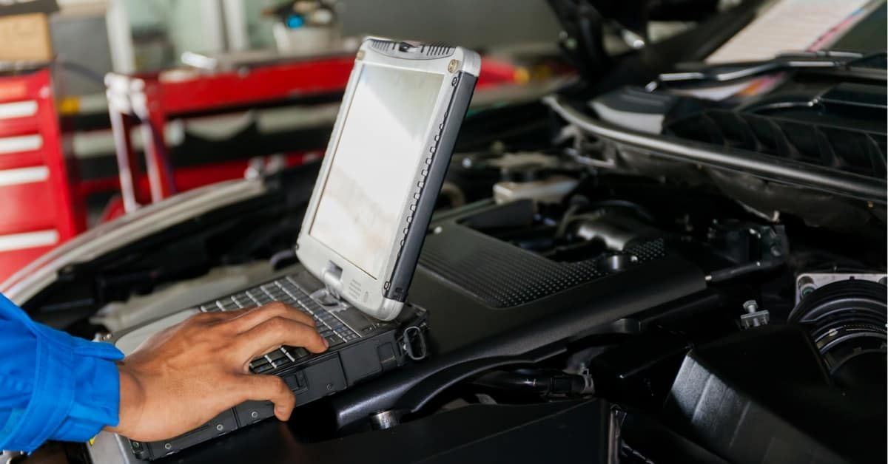
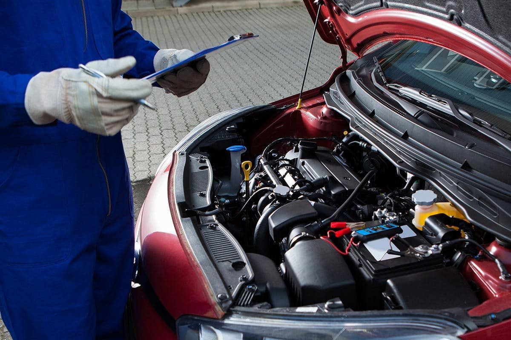

Мы выполняем все виды ремонтных работ: от мелкого кузовного ремонта до сложного капитального ремонта двигателя и трансмиссии. Наши специалисты обладают многолетним опытом и используют только качественные запчасти и современные инструменты, чтобы ваш автомобиль всегда оставался в отличном состоянии.
Мы предлагаем комплексную диагностику вашего автомобиля, чтобы выявить любые проблемы на ранних стадиях. Наши диагностические процедуры включают проверку системы зажигания, топливной системы, систем охлаждения и электроники. Мы используем передовое диагностическое оборудование для точной и быстрой оценки состояния вашего автомобиля.
Регулярное техническое обслуживание – залог надежности и долгого срока службы вашего автомобиля. В нашем автосервисе проводятся все необходимые процедуры ТО, включая замену масла, фильтров, тормозных колодок, проверку и регулировку узлов и агрегатов. Мы обеспечиваем качественное и своевременное обслуживание вашего автомобиля, чтобы предотвратить возможные поломки и сохранить его в отличном состоянии.
